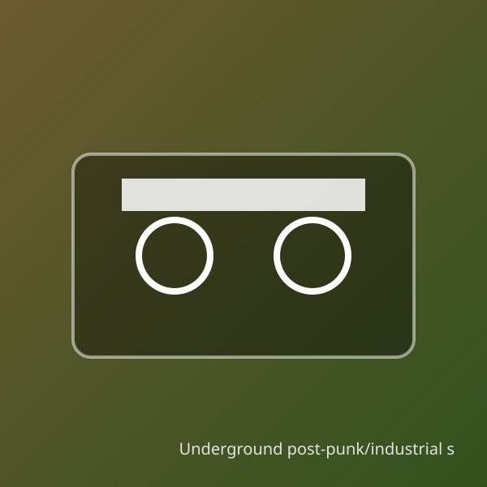

G.D.E. (Grupo de Extermínio), No Art Pictures

Where and when: Underground post-punk/industrial scene, Santa Maria, Rio Grande do Sul, Brazil; Date(s): 1995 (blog); item record has no date; Medium: Demo cassette; collector digitisation
Music made where it wasn't wanted, and songs that kept the score.

Where and when: Underground post-punk/industrial scene, Santa Maria, Rio Grande do Sul, Brazil; Date(s): 1995 (blog); item record has no date; Medium: Demo cassette; collector digitisation